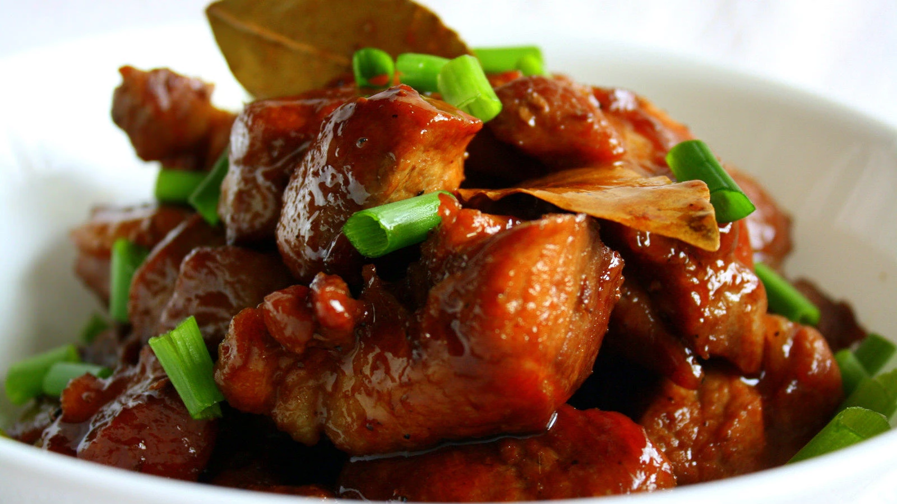

|  |
DescriptionPhilippine adobo is a popular Filipino dish and cooking process in Filipino cuisine that involves meat, seafood, or vegetables marinated in vinegar, soy sauce, garlic, and black peppercorns, which is browned in oil, and simmered in the marinade. Ingredients1 tablespoon oil Procedure1. In a pot over medium heat, heat oil. Add onions and garlic and cook until limp. Add pork and cook, stirring occasionally, until lightly browned. Add chicken and cook, stirring occasionally, until lightly browned and juices run clear. PriceP50 / serving |
||
| Previous | Next |